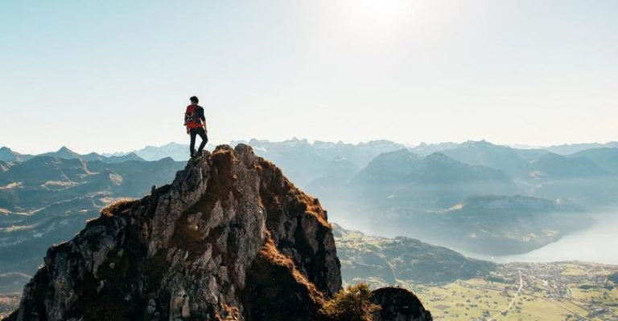

Альпинизм
Альпинизм - это экстремальный вид спорта, восхождение на горные вершины (пики) и гряды с использованием специального альпинистского снаряжения. Как таковых правил в этом виде спорта нет. В зачет идет количество покоренных вершин и сложность пройденного маршрута (скалы, разломы, слой льда, угол подъема).
Существует два направления альпинизма:
- учебное
- спортивное
Учебное направление включает в себя начальную подготовку спортсмена-альпиниста: умение пользоваться канатами, щеколдами, ледорубом, обувью. Тренировки проводятся на небольших горах и горных грядах, высота которых не превышает 1 500 метров.

Спортивный альпинизм – это более профессиональное направление. Оно включает в себя покорение известных горных вершин. Проводится в групповом и личном зачете. Восхождение на каждую вершину согласуется с Всероссийской Федерацией альпинизма и Союзом альпинистов Госкомспорта России. Вершина считается покоренной после размещения на ней флага той страны, гражданином которой является альпинист.
Альпинизм как вид спорта впервые появился в Швейцарии. Годом его появления принято считать 1786 год. В этом году трое спортсменов Г. Соссюр, М. Паккар и Ж. Бальма, используя специальное альпинистское снаряжение, совершили восхождение на Монблан - высшую точку Альпийских гор.